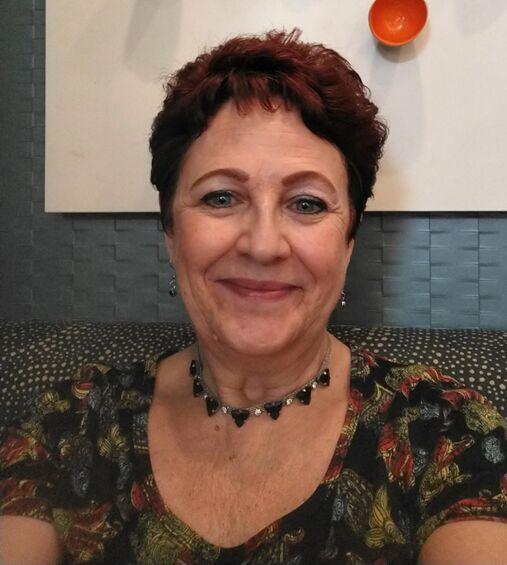

Why choose Shari Haley Bookkeeping?
Bookkeeping and tax prep made easy, so your business can succeed.
Two decades of experience, focused on small business
Shari Haley brings more than 20 years of business organization and bookkeeping experience to every client. After years in the corporate world, she chose to focus her expertise where it makes the biggest difference: helping small business owners organize and optimize their financial records.
Whether you’re just starting out or you’ve been in business for years, Shari helps you stay compliant, find the tax advantages available to you, and make informed decisions with confidence.
Based in DeLand, Florida, Haley Bookkeeping & Administrative Services serves small businesses across Volusia County and Central Florida.


Accurate, dependable, transparent bookkeeping
Our mission is to empower small businesses with accurate, dependable, and transparent bookkeeping — built on consistent, careful data entry, every single month.
What we value
- Integrity — honest, straightforward answers, even when the news isn’t what you hoped.
- Efficiency — organized systems that save you time and reduce costs.
- Personalized service — patient explanations of the why and when behind your books.
Bookkeeper or accountant — what’s the difference?
The key differences between bookkeeping and accounting come down to expertise and scope. Bookkeepers focus on the transactional side — recording, categorizing, and reconciling every transaction. Accountants focus on analysis, reporting, and decision-making built on those records.
Great accounting starts with great bookkeeping. Clean, current books make your accountant’s work faster, your tax return more accurate, and your financing applications easier.
See our servicesClient testimonials
I use Shari for my small business bookkeeping. She has saved me a ton of time by keeping track of the things I do not have time for. I really appreciate that she has the patience to talk me through the why and when for bookkeeping items. She is very honest and to the point. Which are two things I value highly in a bookkeeper.

Shari helped me with some tax questions that I had regarding my business that I recently started. She provided excellent & accurate information. I am so thankful for her help I definitely recommend!
Start with a free, no-obligation consultation
Tell us where your books stand today. Shari will review your current bookkeeping and show you where you can save time, cut costs, and get clearer numbers.